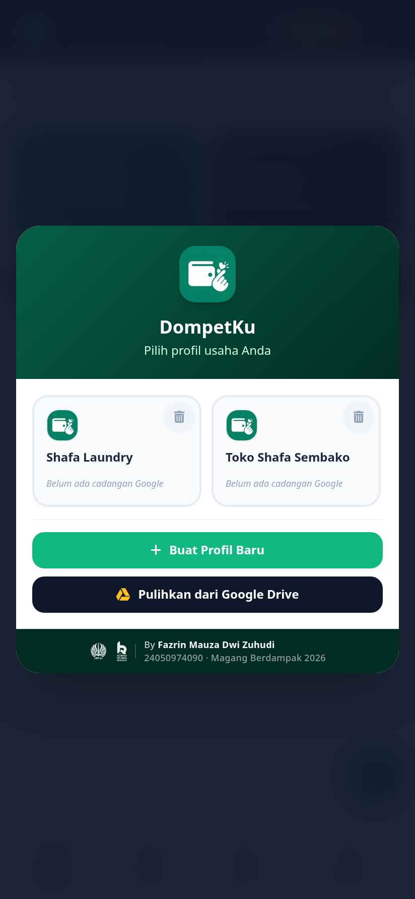

Frame 01
Tampilan Awal dan Pemilihan Profil Akun
Detail Tampilan
Fungsi SistemPintu masuk pemilihan entitas kas aktif antara Profil Usaha dan Profil Pribadi.
Komponen UtamaKartu seleksi profil, visual status saldo berjalan, dan tombol inisialisasi profil baru.
Relevansi UMKMMenjamin pemisahan pembukuan kas bisnis dan kebutuhan rumah tangga sejak langkah awal.